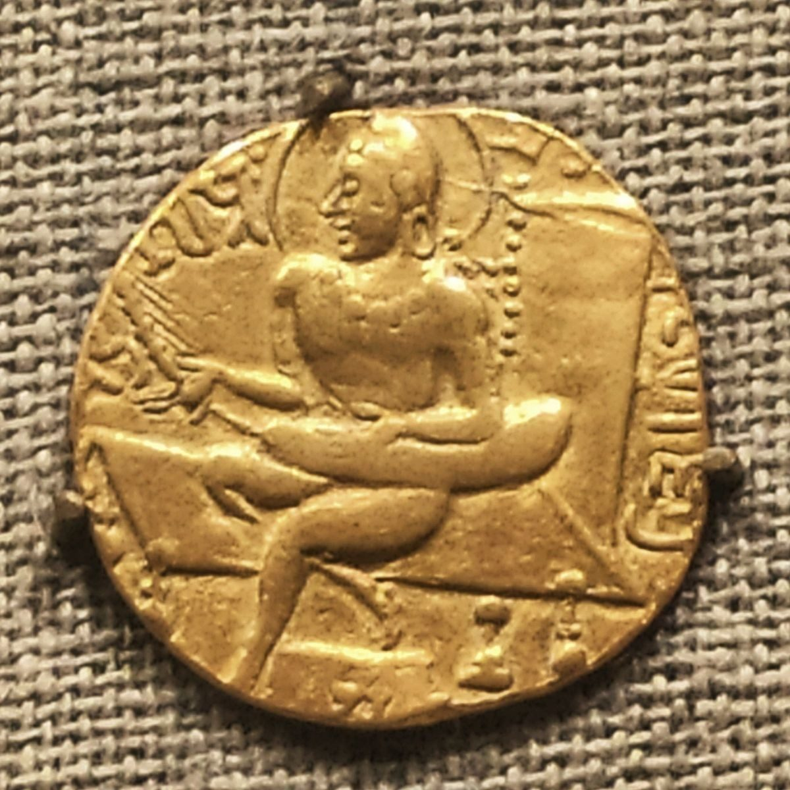
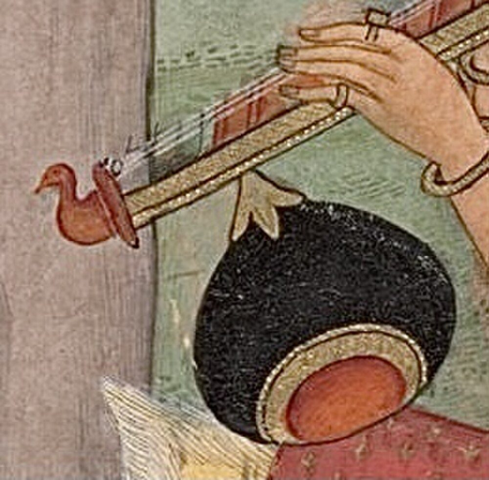
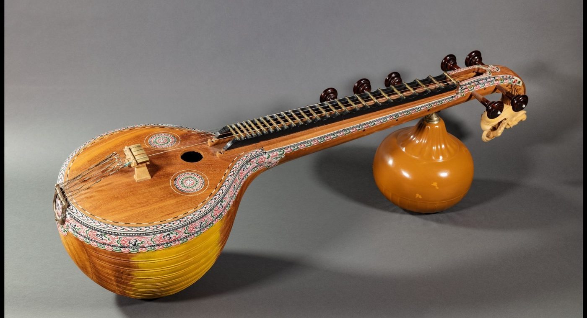
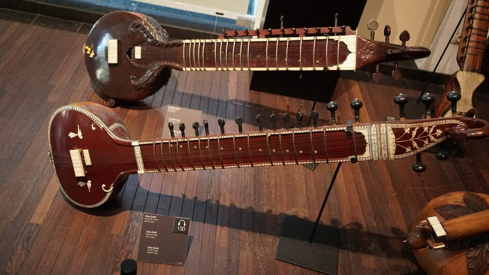
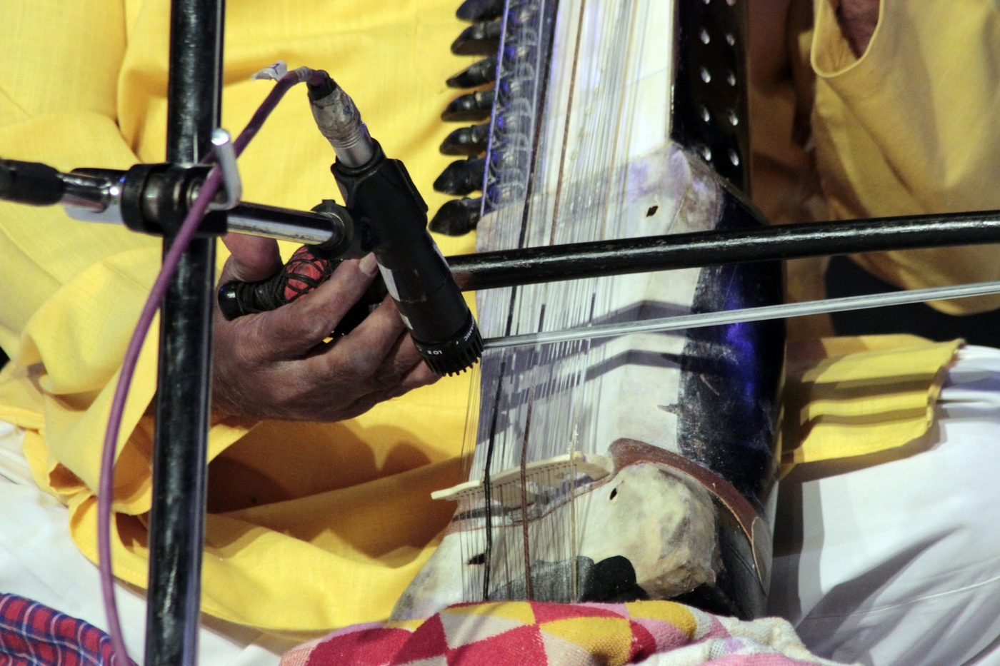
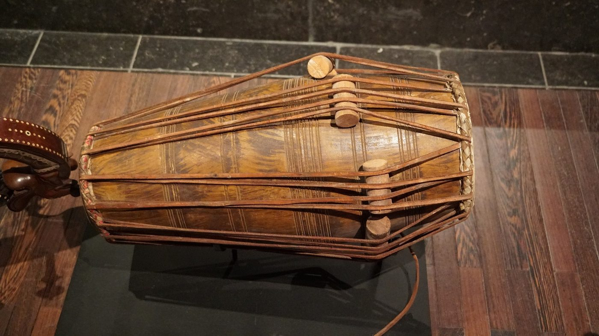
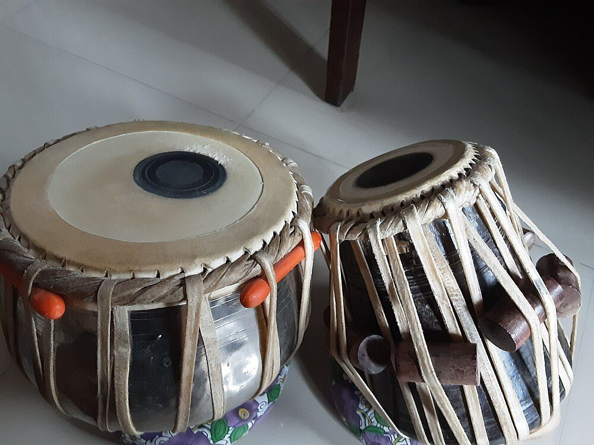

Chapter 10: Musical Instruments¶
India has one of the richest instrumental cultures in the world: hundreds of stringed, wind, membrane and solid instruments, ranging from the single-stringed drone of a wandering singer and the clay pots of village percussion to the vīṇā, sitār and mṛdaṅgam of the concert stage. Instruments appear in the earliest Indian literature and art, are classified in the Nāṭyaśāstra, are described in detail in medieval treatises and are depicted in the sculpture and painting of every period. They have also changed constantly. Most of the instruments of modern art music took their present form in the last three centuries, often in response to new genres, new patrons and contact with other musical cultures. The ancient fourfold classification is the natural place to begin, because it still organises the way Indian musicians think about their instruments; the principal instruments of art music, the instruments of ritual and temple, their makers and players, and the instruments now rare follow. Folk instruments are discussed further in Chapter 21.
10.1 The Four Classes of Instruments¶
The Nāṭyaśāstra (ch. 28 in Ghosh’s numbering) divides instruments (vādya or ātodya) into four classes:
- Tata
- (“stretched”): stringed instruments, such as the vīṇā.
- Suṣira
- (“hollow”): wind instruments, such as the flute (vaṃśa).
- Avanaddha
- (“covered”): instruments with a stretched skin, the drums.
- Ghana
- (“solid”): instruments sounded by striking solid bodies, such as cymbals.
The chapters that follow describe the two principal vīṇās of the theatre — the nine-stringed vipañcī, played with a plectrum, and the seven-stringed citrā, played with the fingers — the flute, and three drums of the puṣkara group (mṛdaṅga, paṇava and dardura), with their strokes and the ways of tuning and playing them (Ghosh 1950; Rowell 1992). Śārṅgadeva’s Saṅgītaratnākara devotes a whole chapter to instruments and describes many more, including several kinds of vīṇā (among them the one-stringed ekatantrī, the ālāpinī and the kiṃnarī), wind instruments and drums (Shringy and Sharma 1978).
The four-fold scheme, based on the material that vibrates, is the oldest systematic classification of instruments known (Table 10.1). It was brought to the notice of European scholars in the nineteenth century, and the Belgian curator Victor-Charles Mahillon, whose catalogue of 1880 was the starting point for the classification by Erich von Hornbostel and Curt Sachs (1914) now used in museums worldwide, is generally thought to have been aware of it; the four Indian classes correspond broadly to the chordophones, aerophones, membranophones and idiophones of the modern system (Deva 1978).
| Class | Examples |
|---|---|
| Tata (strings) | Sarasvatī vīṇā, rudra vīṇā (bīn), sitār, surbahār, sarod, sāraṅgī, santūr, tānpūrā, violin, dilrubā and esrāj, rabāb, gōṭṭuvādyam (citravīṇā), ektārā |
| Suṣira (wind) | bānsurī and veṇu (flutes), śahnāī, nāgasvaram, śaṅkha (conch), kombu (horn), harmonium |
| Avanaddha (drums) | tablā, pakhāvaj, mṛdaṅgam, tavil, ḍholak, khol, pung, ceṇṭa, maddaḷam, miḻāvu, iḍakka, kañjīrā, ḍaph, naqqāra |
| Ghana (solid) | ghaṭam, mañjīrā and tāḷam (cymbals), jalataraṅg, morsing (jaw harp), ghaṇṭā (bell), kartāl, cimṭā |
10.2 Instruments in the Medieval Treatises and at the Mughal Court¶
The sixth chapter of the Saṅgītaratnākara (Chapter 4) is the fullest medieval account of Indian instruments. Śārṅgadeva keeps Bharata’s four classes but describes many more instruments within each, with details of their construction, tuning and technique. Among his stringed instruments are several vīṇās of different kinds: the one-stringed ekatantrī; the seven-stringed citrā and nine-stringed vipañcī of the older texts; the many-stringed mattakokilā; the ālāpinī, a stick zither with a single gourd; and the kiṃnarī, a stick zither with gourds and frets, the ancestor of the later fretted vīṇās. Under the wind instruments he describes the flute (vaṃśa) in several sizes, horns and conches; under the drums, a long series of barrel, hourglass and frame drums, among them the mardala, the paṭaha and the hourglass huḍukkā, with their strokes and syllables; and under the solid instruments cymbals and bells. The account shows that the instrumentarium of the thirteenth century was already very different from that of the Nāṭyaśāstra: the arched harp had gone, the stick zither had taken its place, and the drums had multiplied (Shringy and Sharma 1978; Deva 1978).
The Persianate courts brought further instruments. Mughal paintings, as Bonnie Wade has shown, depict with care the instruments of the court and its ceremonies: the Indian bīn and pakhāvaj beside the Afghan and Persian rabāb and long-necked tanbūr, frame drums (daf), and the naubat, the ceremonial ensemble of kettledrums (naqqāra), long trumpets (karnā) and shawms (surnā) that played at palace gates and marked the hours (Wade 1998). Some of these instruments remained foreign to the art music; others, through the hands of hereditary musicians, became the ancestors of its modern instruments, as the rabāb did of the sarod. The history of Indian instruments is thus a history of continual adoption and adaptation, from the Central Asian lutes of the medieval period to the violin and harmonium of the colonial period (below).
10.3 Stringed Instruments¶
10.3.1 The vīṇā: from harp to zither¶
The word vīṇā has meant different instruments at different times. In early Indian art — the reliefs of Bharhut, Sanchi and Amaravati (second century BCE to third century CE) and the gold coins on which the Gupta king Samudragupta (c. fourth century CE) is shown playing (Figure 10.1) — the vīṇā is an arched harp, held against the body and plucked with the fingers or a plectrum. The Tamil yāḻ of the Caṅkam poems was also a harp. From about the seventh century, sculpture shows a new instrument, the stick zither: a bamboo or wooden stick with one or more strings, supported by a gourd resonator held against the player’s shoulder or chest. The fretted stick zithers of the medieval period developed into the two great vīṇās of modern India, while the harp disappeared from art music (Deva 1978).


The northern rudra vīṇā or bīn is a large stick zither: a tube of wood or bamboo with two large gourd resonators, high fixed frets, four main strings and drone strings. It was the most prestigious instrument of the Mughal and post-Mughal courts and of dhrupad, played by the Seniya and other hereditary lineages, and its music influenced the ālāp of the sitār and sarod. It has very few players today, among whom the Dagar family has been prominent (Chapter 7). Figure 10.2 shows a vīṇā of this type in a miniature painting.


The southern Sarasvatī vīṇā, the principal stringed instrument of Karnatak music, is a lute (Figure 10.3): a large resonating body carved from jackwood, a hollow neck with twenty-four brass frets set in wax, a second (often decorative) resonator under the neck, four playing strings and three side strings used for drones and rhythm. It developed in the Thanjavur region in the seventeenth century; its frets allow the player to produce the full range of Karnatak gamakas by deflecting the string. Its iconographic association with the goddess Sarasvatī has made it the emblem of Indian music in general. Great modern players include Vīṇā Dhanammal, Karaikudi Sambasiva Iyer, S. Balachander and Emani Sankara Sastri.

.png){kind=link}
10.3.2 The sitār¶
The sitār is a long-necked lute with a gourd resonator, a long hollow neck with eighteen to twenty movable curved metal frets, six or seven main strings and eleven to thirteen sympathetic strings (tarab) beneath the frets, played with a wire plectrum (mizrāb) worn on the right index finger. Its name derives from the Persian sihtār, “three strings”. Allyn Miner has shown that it developed in the eighteenth century from smaller folk lutes, gaining frets, strings and sympathetic strings over the following century and a half, and that its modern repertoire was created by hereditary musicians, beginning with the Masītkhānī and Razākhānī styles (Miner 1993). The surbahār, a larger, deeper sitār developed in the nineteenth century, was used to play ālāp in the style of the bīn. In the twentieth century the instrument evolved further in the hands of Vilayat Khan, whose “vocal style” sitār has one fewer bass string, and of Ravi Shankar, who favoured a heavier instrument with bass strings for ālāp; Ravi Shankar’s international career made the sitār the best-known Indian instrument in the world (Chapter 23).
10.3.3 The sarod¶
The sarod is a fretless lute with a skin-covered wooden belly, a polished metal fingerboard, four or five main strings, drone and rhythm strings and sympathetic strings, played with a plectrum of coconut shell. It developed in the nineteenth century from the Afghan rabāb, brought to India by Pathan musicians who served as soldiers and courtiers, and was adapted to Hindustani music by their descendants (Miner 1993). The metal fingerboard allows long slides (mīṇḍ) by sliding the fingernails along the string. Its great modern exponents include Allauddin Khan’s son Ali Akbar Khan and the Bangash family of Hafiz Ali Khan and Amjad Ali Khan. Figure 10.4 shows a sitār, a surbahār and a sarod.

,_Surbahar_(lute._Mumbai,_India._before_1963)_-_MIM_Brussels_(2018-05-26_10.41.32_by_Miguel_Discart_@Flickr_32451724918).jpg){kind=link}
10.3.4 The sāraṅgī and other bowed instruments¶
The sāraṅgī is a short, broad, bowed lute carved from a single block of wood, covered with skin, with three gut playing strings and up to thirty-five or more sympathetic strings. The player stops the strings not by pressing them against the neck but with the cuticles of the fingernails, which allows the continuous slides and inflections of the voice. The sāraṅgī was for two centuries the principal accompaniment of khayāl, ṭhumrī and Kathak, played by hereditary Muslim musicians whose close association with courtesans brought social stigma; in the twentieth century it was largely displaced by the harmonium, and only a few soloists, notably Ram Narayan, brought it to the concert stage as a solo instrument (Neuman 1980). Fretted bowed instruments, the esrāj and dilrubā, are used in Sikh kīrtan and in Bengal. The violin, adopted into Karnatak music in the early nineteenth century, is described in Chapter 8. Figure 10.5 shows a sāraṅgī beside the harmonium that displaced it.


10.3.5 The santūr and other zithers¶
The santūr is a trapezoidal hammered dulcimer with about a hundred strings, arranged in courses over movable bridges and struck with light wooden mallets. It was the instrument of the Sufi music (sūfiyāna kalām) of Kashmir and was brought to the Hindustani concert stage in the second half of the twentieth century, chiefly by Shivkumar Sharma. The slide-played gōṭṭuvādyam or citravīṇā of Karnatak music, and the vicitra vīṇā of Hindustani music, are fretless instruments played by sliding a solid object along the strings.
10.3.6 The tānpūrā¶
The tānpūrā (Hindustani) or tambūrā (Karnatak) is a long-necked lute with four or five unfretted strings, tuned usually to Pa or Ma and three Sa’s and played in a continuous slow cycle to provide the drone against which all Indian art music is performed. Its characteristic shimmering sound comes from the jawārī, a broad, slightly curved bridge whose surface the vibrating string grazes, and from threads (jīvā) placed between string and bridge to adjust the effect; together they enrich and prolong the upper partials, so that the drone continuously sounds the harmonics against which a singer tunes. C. V. Raman studied the acoustics of the curved bridges of Indian stringed instruments in the early 1920s. The drone sets up the tonic and fifth (or fourth) that define the frame of every rāga; it is a practical and acoustical necessity, and though it has been interpreted symbolically as the unchanging ground against which change takes place, the interpretation is modern.
10.4 Wind Instruments¶
10.4.1 Flutes¶
The transverse bamboo flute (vaṃśa, veṇu, bānsurī, kuḻal) is among the oldest Indian instruments and, as the instrument of Kṛṣṇa, among the most beloved. A simple tube with six to eight finger-holes, it produces the full range of Indian ornaments through the partial covering of holes and the control of breath and angle. In Karnatak music the flute was established as a concert instrument by T. R. Mahalingam (“Mali”, 1926–1986) and N. Ramani; in Hindustani music by Pannalal Ghosh (1911–1960), who designed a larger flute for ālāp, and later by Hariprasad Chaurasia.
10.4.2 Double-reed instruments¶
The śahnāī of the north and the nāgasvaram (nādasvaram) of the south are conical double-reed instruments, related to the surnā family of shawms found from North Africa to China. They are the instruments of auspicious occasions: the śahnāī at weddings, festivals and royal ceremonies, played with drums (naubat) at court gates and shrines; the nāgasvaram, with the barrel drum tavil, in the daily rituals and processions of South Indian temples and at weddings. Both were the hereditary instruments of particular communities: Muslim musicians in the north, the non-Brahmin Iśai Vēḷāḷar community in the south. Bismillah Khan (1916–2006) of Banaras brought the śahnāī to the concert stage and received the Bharat Ratna in 2001; T. N. Rajarathnam Pillai (1898–1956) was the most celebrated nāgasvaram player of his time.
10.4.3 The harmonium¶
The harmonium, a free-reed keyboard instrument, came to India from Europe in the nineteenth century; a portable, hand-pumped version suited to sitting on the floor was manufactured in Calcutta from the 1870s and spread rapidly through popular theatre, devotional singing and light classical music. Its fixed, tempered pitches cannot produce the slides and microtonal inflections of Indian music, and critics, among them Rabindranath Tagore, condemned it as unsuitable, a campaign that kept it off All India Radio for three decades (Section 23.2). Musicians nevertheless adopted it as the standard accompaniment for khayāl, ṭhumrī, qawwālī, Sikh kīrtan and much else, and players such as Govindrao Tembe and Appa Jalgaonkar developed a distinctive accompanying art. The harmonium’s history is a reminder that the instruments of Indian music have always been adopted from wherever they came.
10.5 Drums¶
10.5.1 The mṛdaṅgam and the pakhāvaj¶
The double-headed barrel drum is the oldest type of drum in Indian art music; the mṛdaṅga (“clay body”) of the Nāṭyaśāstra is its ancestor in name. The Karnatak mṛdaṅgam has a body of jackwood and two heads of layered skin. The right head carries a permanent black loading paste (soru or karaṇai) of iron oxide, rice and other materials; the left head is loaded before each performance with a temporary paste of wet semolina, which produces a deep bass. The northern pakhāvaj, the drum of dhrupad, temple music and Kathak, is similar in construction (Figure 10.6), with a paste of wheat dough on the left head. Both drums are tuned to the tonic of the performer by adjusting the tension of their leather braces and the rim (Deva 1978).

_-_MIM_Brussels_(2018-05-26_10.41.15_by_Miguel_Discart_@Flickr_46273424762).jpg){kind=link}
10.5.2 The tablā¶
The tablā is a pair of drums played with the fingers and palms: the right-hand drum (dāyāṃ), of wood, tuned to the tonic, and the left-hand drum (bāyāṃ), of metal or clay, which gives a deep bass that the player modulates by pressing the heel of the hand on the skin (Figure 10.7). Each has a composite head with a black loading patch (syāhī) of iron filings, rice paste and gum, built up in many thin layers. The tablā emerged in the eighteenth century, probably in Delhi, as an instrument suited to accompanying khayāl, instrumental music and dance; its repertoire developed in the hereditary lineages described in Chapter 5 (Kippen 1988). (On the later legends that credit Amīr Khusrau with inventing the tablā and the sitār, see Chapter 7.)

.jpg){kind=link}
10.5.3 Drums with harmonic overtones: C. V. Raman¶
Most drums produce overtones that are not in a harmonic relation to the fundamental, and so have no clear pitch. The physicist C. V. Raman showed, in a short note in Nature in 1920 written with Sivakali Kumar and in a fuller paper of 1934, that the loaded heads of the mṛdaṅgam and the tablā behave differently: the central patch of paste so modifies the vibration of the membrane that the first several overtones are nearly harmonic, giving these drums a definite pitch and a musical tone (Raman 1934). The finding applies to both drums, and to other Indian drums built on the same principle, not to the tablā alone, as is sometimes claimed. Raman’s acoustical work, begun in Calcutta before his Nobel Prize of 1930 for the Raman effect, is a fine example of a scientist taking Indian instruments seriously as objects of study.
10.5.4 Other drums¶
India has a very large number of other drums: the ḍholak, a small barrel drum of north Indian folk and devotional song; the khol, a clay drum of the Vaiṣṇava kīrtan of Bengal, Odisha and Assam; the pung of Manipur (Chapter 18); the tavil, partner of the nāgasvaram; the frame drums ḍaph and kañjīrā, the latter a small tambourine used in Karnatak concerts; the kettledrums naqqāra of courts and shrines; and the temple drums of Kerala, among them the cylindrical ceṇṭa, played with sticks, the maddaḷam, the hourglass iḍakka, whose pitch can be varied to play melodies, and the great copper miḻāvu of Kūṭiyāṭṭam (Chapter 19).
10.6 Solid Instruments¶
The ghaṭam of Karnatak music is a clay pot, made of a special mix of clay and metal powders (the pots of Manamadurai in Tamil Nadu are especially prized), played with the fingers, palms and wrists; the player varies the tone by pressing the mouth of the pot against the stomach. The jalataraṅg (“waves of water”) is a set of porcelain bowls tuned by the amount of water they contain and struck with light sticks. The morsing is a jaw harp, used in Karnatak ensembles for its buzzing rhythmic sound. Cymbals of many sizes — mañjīrā, tāḷam, jhāñj — keep time in devotional singing and dance; the naṭṭuvaṉār who conducts a Bharatanāṭyam recital beats the rhythm on a pair of small cymbals (Chapter 15); and bells (ghaṇṭā) and gongs mark the times of worship in temples.
10.7 Instruments in Ritual and Temple¶
Many instruments have ritual functions independent of art music. The conch (śaṅkha) is blown in worship and was once blown in war; its sound is considered auspicious. Temple bells are rung by worshippers. In South India the nāgasvaram and tavil (maṅgaḷa vādyam, “auspicious instruments”) accompany the daily rituals and festival processions of temples, and each hour and ritual traditionally had its own repertoire. The temple orchestras of Kerala are among the most spectacular musical ensembles in India: the pañcavādyam (“five instruments”: timila, maddaḷam, ilattāḷam, kombu and iḍakka) and the ceṇṭa mēḷam, played by dozens of drummers and horn and cymbal players at festivals such as the Thrissur Pūram. In the north, the naubat of drums and śahnāīs played at palace gates and Sufi shrines marked the hours, and the havelī temples of the Puṣṭimārga have their own instrumental traditions (Chapter 7).
The Yājñavalkya Smṛti (3.115) says that one who knows the art of playing the vīṇā, is learned in śrutis and jātis and understands tāla reaches the path of liberation without effort. The verse expresses an idea that runs through Indian thought about music, that the disciplined practice of sound can be a spiritual discipline; it is often quoted by musicians.
10.8 Makers and Players¶
Instrument making in India has been the work of specialised artisans, often hereditary. The vīṇā makers of Thanjavur, whose instruments carry a geographical indication, carve the body and neck from jackwood and set the frets by ear; the sitār and tānpūrā makers of Miraj in Maharashtra, many of them from Muslim families of the Shikalgar community, supply musicians throughout India; tablā and pakhāvaj makers work in Banaras, Delhi, Mumbai and elsewhere; and ghaṭams are made by potters of Manamadurai. Their knowledge — the choice and seasoning of wood and gourd, the curving of a jawārī, the application of syāhī — is empirical, transmitted in workshops, and rarely written down (Deva 1978).
The social status of instruments and their players has varied greatly. Instruments associated with hereditary low-status communities (the sāraṅgī, the drums of many regions, the nāgasvaram) were long valued musically and despised socially, while instruments associated with high-status patrons and amateurs (the vīṇā, in the twentieth century the sitār) acquired prestige. The adoption by middle-class musicians of instruments once played by hereditary specialists has been one of the main processes of modern Indian musical history.
10.9 New Instruments and New Sounds¶
The adoption of foreign instruments did not end with the violin and the harmonium. In the twentieth century Indian musicians took up a whole series of instruments from outside the tradition and made them vehicles of rāga music, usually by modifying their construction and technique to allow the slides and ornaments that Indian music requires. In Karnatak music, U. Srinivas (1969–2014) made the electric mandolin a concert instrument, playing kṛtis and rāgam–tānam–pallavi on it from childhood; Kadri Gopalnath (1949–2019) adapted the saxophone, modifying its keys to produce gamakas; and the keyboard, the clarinet and the guitar have all found Karnatak exponents. In Hindustani music, the violin, long associated with the south, was taken up by players such as V. G. Jog and N. Rajam, the latter developing a vocal style of playing; the slide guitar, transformed by Brij Bhushan Kabra and by Vishwa Mohan Bhatt, whose “Mohan vīṇā” adds sympathetic and drone strings to a Western guitar, became a concert instrument; and the cello, the saxophone and the electric guitar have been used in fusion and experimental music (Chapter 23) (Farrell 1997; Lavezzoli 2006).
Technology has also changed the sound of the traditional ensemble. The electronic tānpūrā and the śruti box, first manufactured in India in the late twentieth century, have largely replaced the human-played drone in practice and in many performances; amplification has altered the balance between instruments and voices, favouring soft instruments such as the vīṇā and the flute in large halls; and recording and broadcasting have spread the sounds of particular instruments and players far beyond their original audiences. The harmonium, once banned from the radio, is now heard in almost every kind of Indian music, from khayāl to film song. Every generation of Indian musicians has adapted its instruments to its music; the process continues.
10.10 Collections and the Study of Instruments¶
The systematic study of Indian instruments began in the colonial period. Collectors, scholars and Indian patrons assembled instruments for museums and exhibitions; the Bengali scholar and patron Sourindro Mohun Tagore (1840–1914) published works on Indian music and sent collections of Indian instruments as gifts to institutions in Europe and elsewhere, which helped to make them known to Western students of music. The great museum collections of Indian instruments in Kolkata, Chennai, London, Brussels and New York date largely from this period. In independent India, the Sangeet Natak Akademi’s collection and its documentation of folk and classical instruments, the work of scholars such as B. C. Deva, and the archives of All India Radio have extended the record (Deva 1978).
Instruments are also important evidence for the history of music. Their appearance in sculpture and painting, their names in texts, and their surviving examples allow historians to trace the replacement of the harp by the stick zither, the arrival of Persian and Central Asian lutes and drums, and the development of the modern sitār, sarod and tablā. Bonnie Wade’s study of Mughal paintings, for example, uses their careful depiction of instruments and ensembles to reconstruct the music of the court; Allyn Miner’s history of the sitār combines written sources, paintings and surviving instruments (Wade 1998; Miner 1993). The acoustical study of instruments, begun by C. V. Raman, has been continued by physicists and engineers interested in the jawārī, the loaded drumhead and the voice; it is one of the few areas in which Indian music has been the subject of sustained scientific investigation, and its results are modest and precise rather than sensational.
10.11 Rare and Endangered Instruments¶
Several instruments of Indian art music have become rare. The rudra vīṇā has only a handful of serious players, though it has attracted renewed interest; the surbahār and the sursiṅgār, a nineteenth-century fretless instrument used for dhrupad-style ālāp, are now seldom heard; the vicitra vīṇā has very few exponents; and the sāraṅgī, though still played, has lost much of its role as an accompanist and many of the families who played it have left the profession. The Tamil yāḻ, a harp described in Caṅkam poetry, has been the subject of scholarly reconstructions since the 1940s. Many folk instruments are also threatened by changes in the communities and occasions for which they were played (Chapter 21). Documentation by archives and broadcasting organisations, and the work of individual musicians and makers, have preserved some of what might otherwise have been lost.
Further Reading¶
Deva (1978) is the standard survey of Indian musical instruments. Miner (1993) is the authoritative history of the sitār and sarod, and Kippen (1988) of the tablā tradition of Lucknow. Raman (1934) is Raman’s paper on the Indian drums. On the ancient instruments see Rowell (1992); on instruments in Mughal painting, Wade (1998).